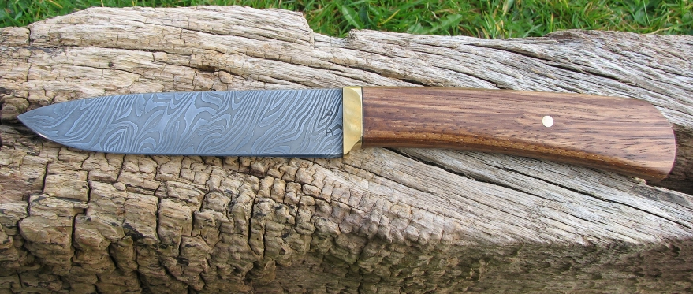
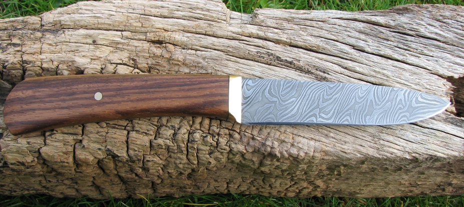
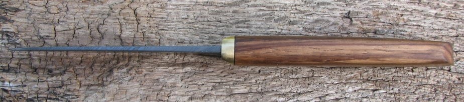
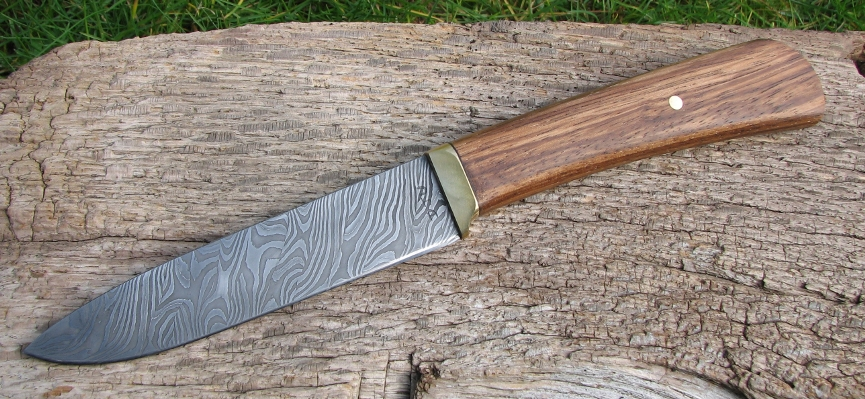

a 4 1/4 inch utility knife with pattern welded blade
March 2009
This knife was finished in March 2009. I wanted to experiment with a mutiple bar damascus pattern, and decided to try the Gordian Knot pattern as described in "The Complete Bladesmith".
I started with the usual 9 layers of CS70 and 15n20 tool steels, forge welded these together, folded the billet to make 18 layers and drew it out into a square bar just over 5/8 of an inch wide. I then twisted half the bar clockwise, and the other half anticlockwise and forged it square again.
Then I cut the bar into four equal lengths, and stacked them together to form a short wide bar with (looking from the end of the bar) the clockwise bars placed top left and bottom right, and the anti bars top right and bottom left. In this way the opposite bars were adjacent to each other.
This composite bar was then forge welded into a solid round bar and twisted again before final forging into a blade. As you can see in the pictures, the pattern formed is quite complex, and I'm pleased with the way it turned out.
The guard and pin are brass with a leather spacer and Zebrano wood handle.
Here are some pictures of the finished knife:
  